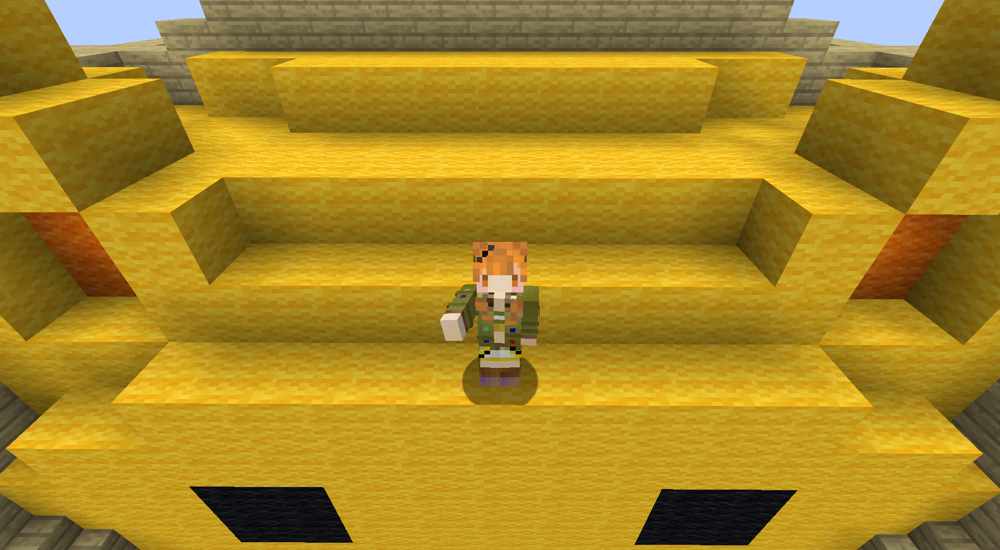
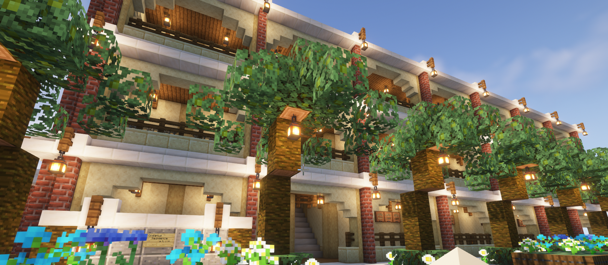

2023.06.23
マインクラフト 建築紹介
こんにちは、きてぃおです！
今回は私の趣味の一つである「マインクラフト」について記事を書いてみました。
マイクラは私の数少ないずっと遊んでいるゲームの一つで、中学生の頃からプレイしてきました。
最初は家族や友達とやる事が多かったのですが、ここ２年ぐらいはオンライン上でサーバーに参加して遊ぶことが多いですね。最近は主にiomc鯖で遊んでいることが多いです。
マイクラにはサバイバル、建築、PVP、MODなど様々なプレイスタイルがありますが、私は主にサバイバルをしたり建築をしたりすることが多いです。そこで今回はその中でも「建築」にフォーカスして、私がこれまでに建てた建築を紹介したいと思います。紹介順番は適当です！
Oceanus residence みなと台
「さんぽシティ」という建築サーバーで建てたマンションです。
総戸数15戸の小さめの高級リゾートマンションという設定で建てました。
すぐ東には路線が通っていて、夜には鉄道橋と一緒にライトアップされます。
また、西側は海になっていて落ちる夕日を眺める事が出来ます。設計からのこだわりポイントです。
部屋は全て同じ構造で、1LDK(風呂トイレ別)になっています。どの部屋も大きなテラスが付いており、180度のオーシャンビューを堪能できます。
上手く明かりを使えた建築で、影MODを入れると凄く映えるところがお気に入りです。
機械工場

これもさんぽシティ鯖で建てたものです。大企業の下請けで金属加工や機械部品の製造をしている設定の工場です。
手前が工場となっていて、奥側の灰色の建物はオフィス（開発部署）になっています。
北側には配送トラックの駐車場があります。屋根の表現が納得いく感じにいったので良かったです。（というかこの構造を作りたいがために建てたところもあるかも）
普段は大型ビルとか住居系を建てることが多いので、リアルに作るのに結構苦労しました。
現実にはシンプルなデザインの工場が多いので、壁の装飾具合が難しかったです。
住宅・アパート
これもさんぽシティ鯖で建てたものです。というか一番建築頑張ってたのはこの鯖に居た頃なので残り二つもこの鯖からの紹介になります。
ああああ
こんにちはああああああああああああああ
小見出し
こんにちはああああああああああああああ
小見出し
こんにちはああああああああああああああ
あとがき
ここまでご覧頂いた方、私の自己満に付き合って頂きありがとうございました！
まだまだ建てたいもの、表現したいものはたくさんあるので、これからも建築スキルは磨いていきたいなと思ってます。
気が向いたらまた紹介ページを作るかもしれません。それではまた～
プロフィール
きてぃお
21歳の大学３年生
ゲーム制作サークル「Creative Staff」所属
音ゲーとマイクラ、寝ることが趣味。
ゲームプログラマー目指してます。
このWebページ、自分でコーディングしたから褒めて。（Bootstrap使用）

存在しない
過去記事
2023年
- マインクラフト 建築紹介
- ウマ娘 マーベラスサンデー実装！ 引くぞ！！！
- 太鼓の達人 段位道場2023 九段進捗
- 東京ゲームショウ 頑張ります
- ウマ娘 サクラローレル実装！ 引くしかない！
- 最近ハマっているラーメン屋
- コミックマーケット101 感想戦
2022年
- 紅華祭おつかれさまでした
- コミックマーケット100 感想戦
- 熱海＆江の島行ってきました
- 太鼓の達人 段位道場2022 九段合格！
- 勝者の特権 焼肉
- 人生２回目のパチンコ まさかの万発!?
- バグレベル 100円で食べられるハンバーグ屋発見
2021年
- ウマ娘 マヤノトップガンSSRサポカ実装！ 魂の500連！
- マインクラフトでクソでかビルを建てました
- バーガーキングが美味すぎる
- マインクラフトがやめられない
- 大学用(？)ゲーミングノートPCを貰った
- 【祝】大学合格【祝】
広告